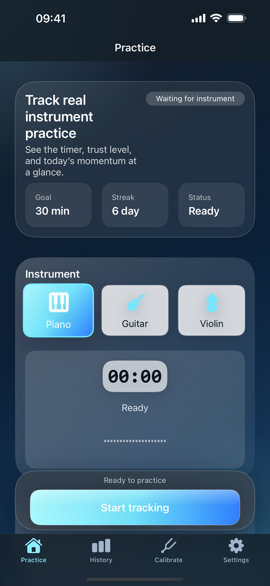
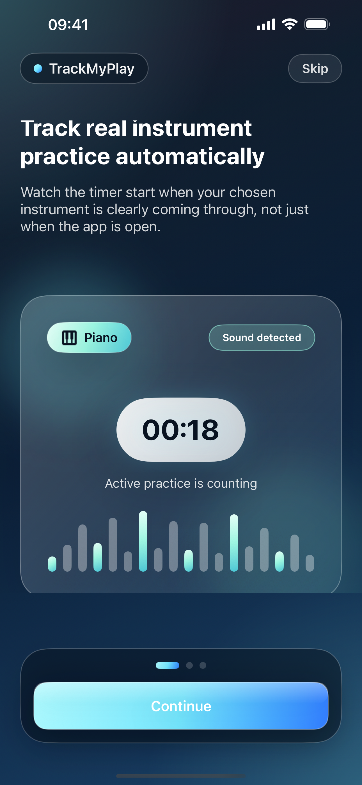
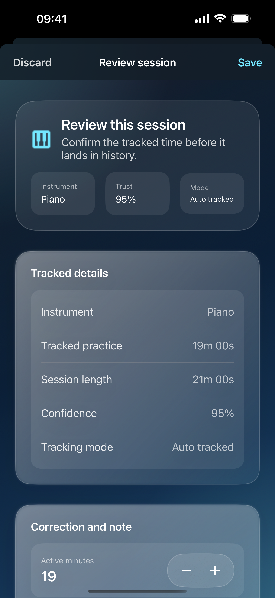
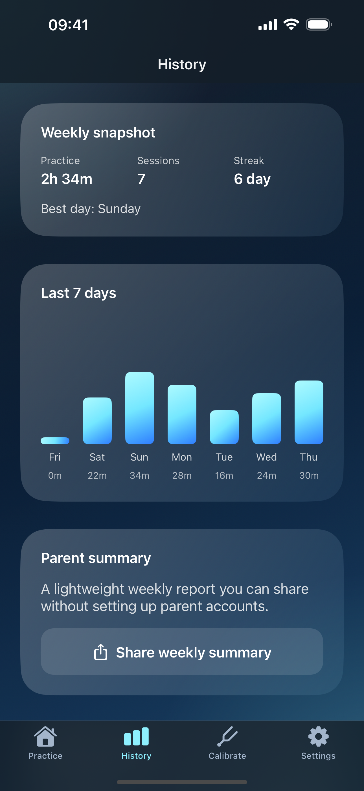

Automatic matched-practice tracking
Start a session and let the app count active piano, guitar, or violin playing instead of any room noise or idle time.
TrackMyPlay helps music students build a real habit without babysitting a timer. Choose piano, guitar, or violin, let on-device detection count matched playing, and review each session before you save it.

TrackMyPlay is built around matched-practice tracking, clear feedback during sessions, and a calmer way to review progress over time.
Start a session and let the app count active piano, guitar, or violin playing instead of any room noise or idle time.
Track the timer, trust level, and today’s momentum at a glance so students know whether the app is hearing the right instrument.
Before saving, adjust the result, add a note, and keep the practice record clean without breaking rhythm during the session.
Review streaks, charts, and weekly snapshots that make it easier to see consistency instead of guessing from memory.
Daily goals and lightweight reminders help keep practice visible, while Live Activities surface active progress during a session.
Audio recognition happens on device. No required account, no raw recording uploads, and local-first storage for practice history.
These screens show the onboarding flow, practice dashboard, session review, weekly summary, and settings experience.

Introduces the student-first practice story and the app’s trust-first tracking model.
Main practice screen with instrument selection, live trust status, and today’s progress.

Fast correction and note capture before a session becomes part of history.

Charts, streaks, and snapshots that make momentum easy to understand.

Goals, reminders, introduction replay, and parent-facing controls in one place.
TrackMyPlay keeps timing honest, makes sessions easier to review, and gives students and families a clearer picture of consistency over time.